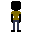
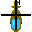
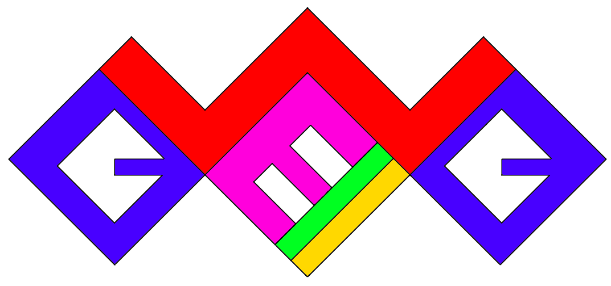

Aw snap, it's time to do one of these again! If you have a logical way of thinking, you might have realized that there is, in fact, no "Week 1" entry. I had forgotten to specify in the last entry that these will be released when significant progress has been made, whether that means after one, two, or ten weeks.
First, the website. The font has been changed to something less ugly, media queries have been added to accommodate mobile devices, and the entire website is now held on one page thanks to w3.js.
Second, sprites. Sir Loin has made a few work-in-progress tiles and player sprites. (They're kinda small, so you may need to zoom in a little bit to see them clearly) And, I've also made a disproportionate, brightly-colored logo that needs a makeover. 
Third, general stuff. Pry has assembled a semi-working level editor, I've gotten some music made (I've included a track below), and we have a more fleshed out story now. Once the level editor is completed, we can start developing the actual game and THINGS WILL START TO GET REAL. But we're all in school and #thelearningneverstops so we'll always have stuff that postpones development.
So that'll just about wrap up this entry. I hope I've provided a good summary of what has been accomplished so far. See you later!
-Nitro